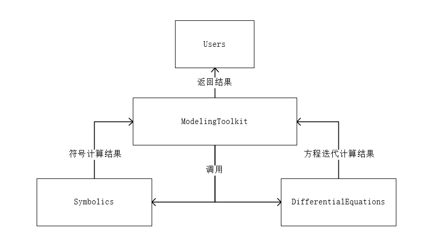

MTK的"前世今生"
Contents：建模、MTK、Symbolics
Contributor: YJY
Email:522432938@qq.com
如有错误，请批评指正。
MTK = ModelingToolkit.jl
Symbolics.jl为MTK依赖的符号计算包
ModelingToolkit.jl为基于符号系统的建模工具包。
DifferentialEquations.jl为处理时间微分的求解建模工具包。
MTK似乎很强大，本篇介绍MTK在建模中承担的角色。
模块化思想
首先，我们聊一聊程序设计中的模块化思想。
个人认为，模块化其实不单单是一种软件设计的思想。毫不夸张地说，模块化也是一种组织与架构的哲学。模块化的含义可以用一个词语概括——各司其职。若是在软件开发中，需要加上一个限定词——精细化。即，精细化的各司其职。
模块化解决问题的核心在于，把问题分成若干个部分，每个部分由特定的对象完成。当每个对象的任务都完成之后，问题也就解决了。
从软件开发到社会的组织架构，都由模块化的影子。课程的小组合作，每个人负责一个小部分；上市公司分为市场部、研发部、财务部...。那么在程序中，这些模块的“对象”就是函数。每个函数完成各的任务，当全部执行完成之后，问题解决了。
例如，有一个变量var。问题是：计算10 * var + var * var + 1的结果。
对于这样一个问题，我们习惯于直接把表达式输入得到结果：
result = 10 * var + var * var + 1但采用模块化的思想，不会这么做。模块化会把这个活分给三个函数去做——乘法函数、平方函数、求和函数。当这个三个函数完成了各自的事情之后，问题解决了。
function mult(a,b)
return a * b
end
function square(a)
return a * a
end
function sum(a...)
s = 0
for i in 1:length(a)
s += a[i]
end
return s
end
result = sum(mult(10,var),square(var),1) 当然，对于这样一个问题非要用模块化思想那是闲的。若是针对一个复杂的系统，没有人能完成所有细节的解决方案，那么模块化思想就会变得尤为重要。
主要有两个方面的好处：
从自上而下的角度。作为上层的调用者，不需要关心底层函数怎样解决问题。只需要知道，传递什么数据能获得什么结果。这对于复杂问题的解决非常重要。大问题分为几个小问题，小问题再分为更小的问题。作为架构师只需要关心核心部分的拆解即可。这是高效的“各司其职”。
从自下而上的角度。把问题细分到不能再分，那么其会具有解决任何问题的潜力。什么意思呢？如果把一个表达式作为一个整体求解，这是完全没有问题的。但如果把一个表达式拆解成四则运算分别求解，就如上面的例子。由该问题设计的四则运算函数，对它们进行合理组合能够解决任何一个求解表达式问题。孰高孰低，立见高下。也可以说，模块化后的解决方案具有普适性，解决了复杂问题中的基本共性问题（足够细分的情况下）。
所以在软件设计领域，有这样一种说法——每一个函数编写时只需要解决一个很小的问题。
MTK在建模仿真中的角色
在DifferentialEquations建模方法从发现问题到获得计算结果，在现代计算科学中一般分为两步：
- 把问题抽象可量化、可处理的数学问题
- 把数学问题设计成可用计算机处理与计算的可计算问题
进一步细分有：
- 抽象问题
- 符号建模
- 模型化简
- 生成迭代格式
- 迭代求解
毫无疑问，第一步由人来完成。剩下的步骤可以由MTK完成。那么新的问题在于，从2-5是否全由MTK从零开始构建呢？答案是否定的！
实际上，在建模仿真这样的大问题中，仍然是模块化的思想。具体的分工如下：
- Symbolics.jl：负责符号运算
- ModelingToolkit.jl：负责模型化简，生成迭代格式
- DifferentialEquations.jl：负责求解
ModelingToolkit的核心在于各种System，System作为一种数据结构，本质是存储的是变量以及由变量构成的方程。而变量的定义与方程的定义由Symbolics完成。所以说，Symbolics是符号计算的基石，MTK在Symbolics的基础之上进一步处理方程与变量，处理成DE能够求解的形式，传递给DE计算。最终得到结果。它们三者的关系如图：

Symbolics实例
符号定义：
@variables t α σ(..) β[1:2]
@variables w(..) x(t) y z(t, α, x)
@variables A[1:5, 1:3] b[1:3]方程定义：
julia> using Symbolics
julia> @variables x y;
julia> @variables A[1:3, 1:3] B[1:3, 1:3];
julia> x ~ y
x ~ y
julia> x - y ~ 0
x - y ~ 0
julia> A ~ B
(broadcast(~, A, B))[1:3,1:3]
julia> A .~ 3x
(broadcast(~, A, 3x))[1:3,1:3]微分运算：
@variables t
D = Differential(t)
z = t + t^2
D(z)
# Symbolics.derivative(t + t^2, t)
expand_derivatives(D(z)) # 1 + 2t化简与符号赋值：
B = simplify.([t + t^2 + t + t^2 2t + 4t
x + y + y + 2t x^2 - x^2 + y^2])
2×2 Matrix{Num}:
2(t + t^2) 6t
x + 2(t + y) y^2
simplify.(substitute.(B, (Dict(x => y^2),)))
2×2 Matrix{Num}:
2(t + t^2) 6t
y^2 + 2(t + y) y^2还有计算雅可比矩阵、函数符号化等等符号计算的内容可查看官方文档。
小结与启示
启示：文档查询
从模块化的角度看待MTK，我们就能知道。MTK能做什么与不能做什么。又或者说，遇到了问题，应该找谁。
问题类型一：
- 符号数组应该如何使用与计算？
- Register如何使用？
- 如何批量处理符号？
这样的问题应该去看Symbolics.jl的文档。因为MTK就是在它的基础上构建的。它不支持的，MTK也没办法使用。
问题类型二：
- 求解的结果如何处理？
- 如何确定精度？
- Callback如何使用？
这样的问题应该去看DifferentialEquations.jl的文档。因为真正的求解工作是DE完成的。solution的结果也从DE中来（MTK会提供关于符号与solution的接口，但DE中solution handling能用的功能，MTK中也一定能用）。
启示：函数使用
在MTK文档没有写上的功能，但DE与Symbolics的文档中有。一般而言都能使用。例如，符号数组的矩阵运算，MTK中一定能用（某些特殊功能不一定）。DE中关于Problem类型的一些参数调用，MTK也可以使用。
每个包有每个包的特性，包与包之间的依赖关系不是功能的交集，而是功能的并集。底层依赖包的功能在上层调用包一般都能使用。只要有了这一点认识。就能够将SCIML生态的功能充分利用起来。这是贯通的其生态的关键。